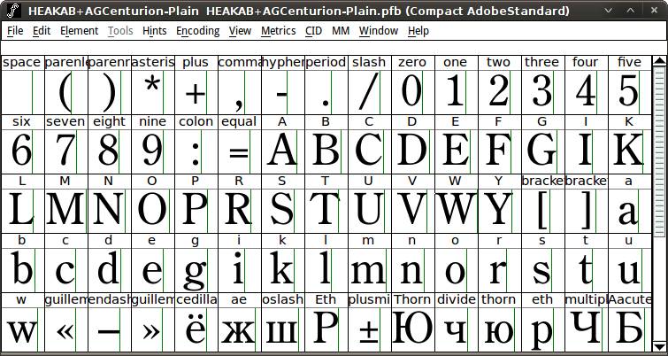
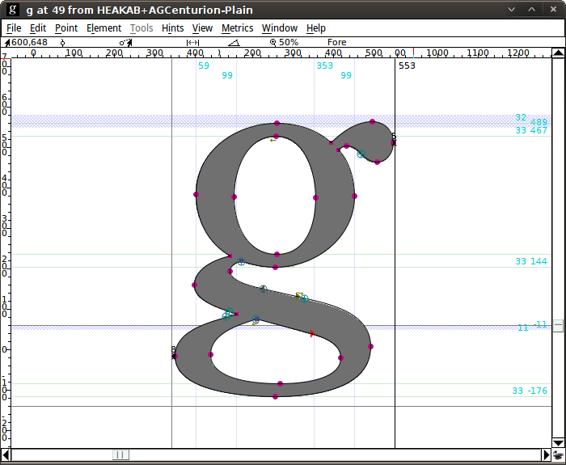
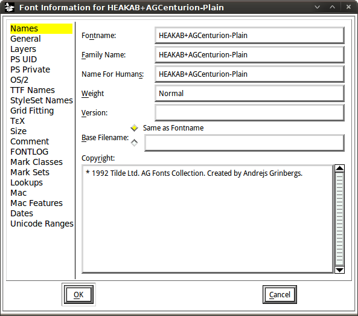

This somewhat controversial feature, extracting embedded fonts from documents, relies on PoDoFo library and currently works only for PDF documents. Support for XPS and SVG is planned for later versions.
To use it
If subsequent importing them to Fontmatrix makes sense to you, do so.
Several things should be mentioned with regards to this functionality.
First of all, fonts are rarely embedded fully, so what you typically get is a so called subsetted font, where only glyphs actually used in a document are present. Here is an example:

Next thing is that Fontmatrix saves these fonts to PFB and stores some useful information like instructions:

Finally, for those copyright concerned people Fontmatrix actually saves this bit of information:

Please note: Fontmatrix team strongly discourages users from infringing copyright. We implemented this feature for fun and education, not for making unlicensed profit from someone else's work. If you want to create a derivative work from a font whose license doesn't explicitely allow that, do contact either designer or vendor beforehand.